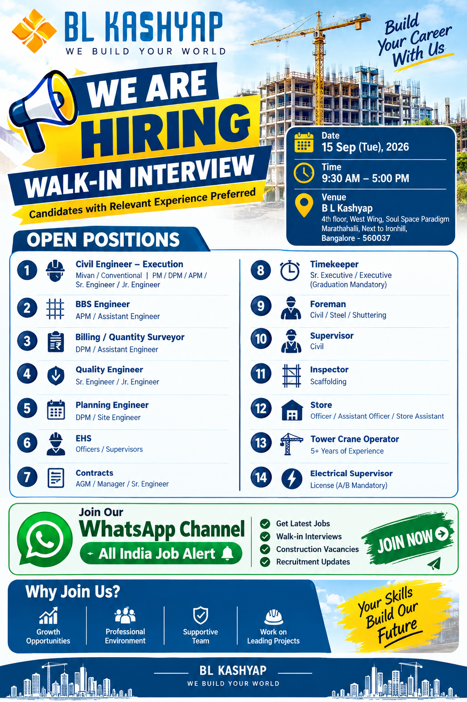

📢 All India Job Alert WhatsApp Channel
Latest private jobs, construction vacancies, engineering jobs, walk-in interviews and recruitment updates ke liye hamara WhatsApp Channel join karein.
JOIN ALL INDIA JOB ALERTAll India Job Alert
BL Kashyap Walk-in Interview 2026
BL Kashyap has announced a walk-in interview opportunity for experienced and skilled professionals in Bangalore. The recruitment drive is scheduled for 15th September 2026 and is aimed at candidates looking for opportunities in the construction and infrastructure sector. Several positions are available across project execution, engineering, quality, planning, safety, contracts, stores, supervision and other construction-related departments.
Candidates with relevant experience are encouraged to check the available positions and attend the interview according to their professional background. The recruitment includes opportunities for engineers as well as supervisors, foremen, inspectors, store professionals, timekeepers and other site-based personnel. Candidates should carefully review the role requirements before attending.
The walk-in interview will be conducted on Tuesday, 15th September 2026, between 9:30 AM and 5:00 PM. The interview venue is BL Kashyap, 4th Floor, West Wing, Soul Space Paradigm, Marathahalli, Next to Ironhill, Bangalore – 560037. Candidates travelling from outside Bangalore should plan their journey so that they can reach the venue during the interview hours.
Walk-in Interview Details
🏢 Company: BL Kashyap
📅 Interview Date: 15th September 2026 (Tuesday)
⏰ Interview Time: 9:30 AM to 5:00 PM
📍 Interview Venue:
BL Kashyap,
4th Floor, West Wing,
Soul Space Paradigm,
Marathahalli, Next to Ironhill,
Bangalore – 560037
Open Positions
1. Civil Engineer – Execution
Area: Mivan / Conventional Construction
Possible Designations: PM / DPM / APM / Senior Engineer / Junior Engineer
This opportunity is suitable for civil engineering professionals working in construction execution. Candidates with experience in Mivan or conventional construction can highlight their site execution responsibilities, project coordination, manpower management, construction activities and project delivery experience. Applicants should mention their current designation and total industry experience clearly in their updated resume.
2. BBS Engineer
Possible Designation: APM / Assistant Engineer
Candidates with experience in Bar Bending Schedule activities can consider this opening. Professionals should highlight their knowledge of reinforcement detailing, BBS preparation, quantity checking, drawings and coordination with site and engineering teams. Relevant construction project experience should be clearly mentioned in the CV.
3. Billing / Quantity Surveyor
Possible Designation: DPM / Assistant Engineer
The Billing and Quantity Surveyor position is suitable for candidates experienced in quantity measurement, construction billing, certification, documentation and project commercial activities. Applicants should mention their experience with quantities, contractor bills, measurements and project documentation wherever applicable.
4. Quality Engineer
Possible Designation: Senior Engineer / Junior Engineer
Quality professionals with construction project experience can apply for this category. Candidates should highlight their quality inspection, documentation, material checking, testing, site inspection and coordination experience. Civil engineering candidates with relevant QA/QC exposure should include their project details in their resume.
5. Planning Engineer
Possible Designation: DPM / Site Engineer
Planning professionals can consider this opportunity if they have experience in project scheduling, progress monitoring, site planning, coordination and reporting. Candidates should mention their planning software knowledge and previous project responsibilities in their updated CV.
6. EHS
Positions: Officers / Supervisors
Candidates with experience in Environment, Health and Safety activities can apply for the EHS category. Safety professionals should highlight their site safety experience, inspections, toolbox talks, safety documentation, risk assessment and coordination with construction teams.
7. Contracts
Possible Designations: AGM / Manager / Senior Engineer
Experienced contracts professionals can consider this opportunity. Candidates should mention experience related to contracts, commercial coordination, documentation, project agreements, contractor coordination and other relevant construction contract activities.
8. Timekeeper
Possible Designations: Senior Executive / Executive
Qualification: Graduation Mandatory
Graduates with relevant timekeeping, workforce attendance and site administration experience can apply. Candidates should highlight their experience in maintaining attendance records, manpower documentation, shift records and coordination with site teams.
9. Foreman
Category: Civil / Steel / Shuttering
Experienced foremen with practical construction-site knowledge can apply for the available Foreman positions. Candidates should identify their specialization such as civil, steel or shuttering and mention the type of projects handled previously.
10. Supervisor
Category: Civil
Civil supervisors with relevant site experience can consider this opening. Candidates should mention their experience in supervising construction activities, manpower coordination, material usage, quality coordination and daily site work.
11. Inspector
Category: Scaffolding
Candidates with scaffolding inspection experience can apply for this position. Relevant site inspection knowledge, safety awareness and experience with scaffolding systems should be highlighted in the resume.
12. Store
Possible Designations: Officer / Assistant Officer / Store Assistant
Construction store professionals can apply for these openings. Candidates should mention their experience in material receiving, stock records, inventory management, material issue and receipt, documentation and coordination with project teams.
13. Tower Crane Operator
Experience: 5+ Years
Experienced tower crane operators with five or more years of relevant experience can consider this opportunity. Candidates should highlight their operating experience, project exposure and relevant equipment knowledge.
14. Electrical Supervisor
Requirement: License (A/B Mandatory)
Electrical professionals with supervisory experience and a valid A/B license can apply. Candidates should clearly mention their electrical site experience, supervisory responsibilities and license details in their updated resume.
Recruitment Opportunity Summary
| Position | Experience / Requirement |
|---|---|
| Civil Engineer – Execution | Relevant construction experience; Mivan / Conventional |
| BBS Engineer | Relevant BBS / construction experience |
| Billing / Quantity Surveyor | Relevant billing / QS experience |
| Quality Engineer | Relevant QA/QC experience |
| Planning Engineer | Relevant planning experience |
| EHS Officer / Supervisor | Relevant EHS experience |
| Contracts | AGM / Manager / Senior Engineer level |
| Timekeeper | Graduation mandatory |
| Foreman | Civil / Steel / Shuttering |
| Civil Supervisor | Relevant site experience |
| Scaffolding Inspector | Relevant inspection experience |
| Store | Officer / Assistant Officer / Store Assistant |
| Tower Crane Operator | 5+ years |
| Electrical Supervisor | A/B License mandatory |
Why Candidates Should Consider These Opportunities
The recruitment drive provides opportunities across several major functions of the construction industry. Candidates can find roles related to civil execution, engineering, planning, billing, quantity surveying, quality control, EHS, contracts, stores and equipment operations. This variety allows experienced construction professionals to identify a position that matches their existing skills and career background.
Professionals who have worked on residential, commercial, infrastructure or other construction projects can review the requirements and prepare their application accordingly. Candidates should focus on presenting their practical project experience, responsibilities and technical skills in a clear manner.
For senior positions, applicants should provide details of projects handled, team responsibilities and leadership experience. For engineering and supervisory positions, site execution and technical experience should be clearly mentioned. For store, timekeeping and administrative roles, candidates should highlight documentation, coordination and project support experience.
How to Apply
Interested candidates can attend the walk-in interview on 15th September 2026 between 9:30 AM and 5:00 PM.
Candidates should carry an updated resume and relevant documents while attending the interview. Candidates with relevant construction experience are preferred.
📧 Email:
recruitment.south@blkashyap.com
📞 Contact – Ravi Prakash:
08061952400
📞 Contact – Sachin:
7349385368
📞 Contact – Raja Surya:
7989307592
📍 Interview Venue:
BL Kashyap, 4th Floor, West Wing,
Soul Space Paradigm, Marathahalli,
Next to Ironhill,
Bangalore – 560037
🗓️ Date: 15th September 2026 (Tuesday)
⏰ Time: 9:30 AM to 5:00 PM
Documents to Carry
- Updated Resume / CV
- Educational Qualification Documents
- Experience Certificates
- Government ID Proof
- Recent Passport-size Photographs
- Relevant Technical Certificates
- Valid License where applicable
Interview Preparation Tips
Candidates should prepare their updated resume before attending the walk-in interview. The resume should clearly mention total experience, current designation, previous employers, project names, qualification and technical skills. Construction professionals should be prepared to discuss the projects they have worked on and their actual responsibilities at site.
Civil engineers and supervisors should be ready to explain execution activities, drawings, coordination, manpower management and project progress. Planning professionals may be asked about scheduling, progress tracking and reporting. Billing and quantity survey candidates should be prepared to discuss measurements, quantities, billing documentation and related project activities.
Safety candidates should be prepared to explain safety inspections, risk assessment, toolbox meetings and site safety coordination. Store professionals should be ready to discuss inventory, material receipts, stock records and material issue procedures. Equipment operators and electrical professionals should carry relevant license or certification documents wherever required.
Important Information
Candidates should verify the latest recruitment information before travelling to the interview venue. Interview schedules, requirements and vacancies may be subject to change according to the company's recruitment process.
Applicants should provide genuine information regarding their qualification and experience. Do not pay money to any person promising guaranteed selection or employment.
Never share OTPs, passwords, ATM PINs, banking passwords or other sensitive financial information with unknown persons during a job application process.
📲 Get More Job Updates
Bangalore jobs, Civil Engineer jobs, construction vacancies, engineering jobs, supervisor jobs, QA/QC jobs, EHS jobs and walk-in interview updates ke liye All India Job Alert WhatsApp Channel join karein.
JOIN WHATSAPP CHANNELFrequently Asked Questions
When is the BL Kashyap walk-in interview?
The walk-in interview is scheduled for 15th September 2026.
What is the interview timing?
The interview timing is from 9:30 AM to 5:00 PM.
Where is the interview venue?
The interview venue is BL Kashyap, 4th Floor, West Wing, Soul Space Paradigm, Marathahalli, Next to Ironhill, Bangalore – 560037.
Which candidates are preferred?
Candidates with relevant construction experience are preferred. Applicants should check the requirements of the position before attending.